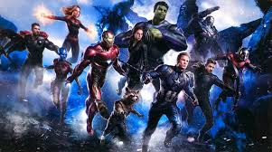
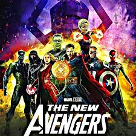

Мстители!

«Мстители» (англ. Avengers) — элитная команда супергероев из комиксов компании Marvel Comics.
Она была создана писателем Стэном Ли и художником Джеком Кирби и впервые появилась в комиксе
The Avengers в сентябре 1963 года.
Мстители, прозванные впоследствии «Самыми могучими героями Земли»,
первоначально состояли из Человека-муравья, Осы, Тора, Железного человека и Халка.
Однако с самого начала в составе команды стали происходить изменения: Халк вскоре покинул Мстителей,
и к ним присоединился Капитан Америка.
Изменяющийся состав стал визитной карточкой команды,
хотя некоторое постоянство всё-таки сохранялось:
Мстители сражались с такими врагами, одолеть которых в одиночку не мог ни один супергерой —
так появилась фирменная фраза: «Мстители, общий сбор!» (англ. Avengers Assemble!).
За всё время существования команды в ней побывали люди, мутанты, роботы, боги, пришельцы,
сверхъестественные существа и даже бывшие злодеи.
Состав команд Мстителей
В настоящее время существуют три команды Мстителей и Академия Мстителей, которая появилась вместо Инициативы.
Секретные Мстители— команда созданная для выполнения секретных операций.
- Капитан Америка (Стив Роджерс)
- Лунный рыцарь (Марк Спектор)
- Чёрная Вдова (Наташа Романова)
- Валькирия
- Человек-муравей (Эрик О’Грейди)
- Нова (Ричард Райдер)
- Воитель (Джим Роудс)
- Зверь (Хэнк Маккой)
- Агент Веном (Флэш Томпсон)
- Агент Колсон
Мстители (англ. Avengers) — основная команда.
- Тор
- Соколиный глаз (Клинт Бартон)
- Капитан Америка (Стив Роджерс)
- Железный человек (Тони Старк)
- Доктор Стрэндж (Стивен Винсент Стрэндж)
- Халк (Брюс Бэннер)
- Капитан Марвел (Кэрол Денверс)
- Чёрная Вдова (Наталья Романова)
- Росомаха (Джеймс Хоулетт)
- Сокол (Сэм Уилсон)
- Человек-паук (Питер Паркер) (Начиная с событий «Войны бесконечности»)
- Человек-Муравей (Скотт Лэнг)

Новые Мстители (англ. New Avengers) — Команда собранная Люком Кейджем.
- Железный Человек (Тони Старк)
- Люк Кейдж
- Человек-паук (Питер Паркер)
- Железный Кулак (Дэнни Рэнд-Кай)
- Существо (Бен Грим)
- Капитан Марвел (Кэрол Дэнверс)
- Пересмешница (Бобби Морс)
- Ронин (Клинт Бартон)
Другие версии
- Мстители 1950-х
- Недолговечная команда супергероев 1950-х, называвшая себя «Мстители».
Эта команда, состоявшая из Чудо-парня[en], Венеры[en], Трёхмерного Человека, Человека-гориллы[en],
Человека-робота, Джимми Ву[en], Нэморы[en] и Джанн из джунглей, существовала в альтернативной
линии времени, который был стёрт манипулировавшим временем Иммортусом. Версия группы без
Трёхмерного Человека существовала в основной вселенной и, в конце концов,
собралась вновь в наши дни.
- Мстители будущего
- В альтернативном будущем, известном как MC2, Мстители расформировались и Особняк Мстителей
теперь музей. Чрезвычайная ситуация заставила Эдвина Джарвиса подать сигнал тревоги,
и новое поколение героев образовали новую команду Мстителей. Большинство новых
Мстителей — дети признанных супергероев Marvel.
- Marvel Adventures: Мстители
- В 2006 Marvel Adventures[en] (линия Marvel Comics «для всех возрастов»
начала новую серию о Мстителях, введя состав из Капитана Америки, Железного Человека,
Человека-Паука (занявшего место Человека-муравья), Росомахи, Грозы, Халка и Великанши
(Дженет Ван Дайн, Оса в основной вселенной). В недавних выпусках Гроза была упомянута как
соруководитель команды. Серия происходит в своей собственной непрерывности, как и большинство
других комиксов линии Marvel Adventures.
- День М: Мстители
- В альтернативной реальности, созданной Алой Ведьмой, Люк Кейдж сформировал команду наделённых
сверхсилами людей, чтобы сражаться за права человека.
- Алтимейтc (Ultimates)
- В Ultimate вселенной Ник Фьюри собирает из супергероев команду Алтимейтс.
- Ultimate Comics: Avengers
- После глобального события Ультиматум в Ultimate-вселенной произошла массовая смена статуса-кво
супер героев. Щ. И.Т. угрозу Магнито проморгал, поэтому в организации произошли кадровые
перестановки. В результате Ник Фьюри оказывается без работы, а Капитан Америка впадает в
депрессию, после того как во время очередного задания сталкивается с равным по силе террористом
Красным черепом. Это внебрачный сын Стива Роджерса. Тони Старк решает, раз Ультиматум удалось
остановить только совместными усилиями, то следует создать команду для того, чтобы
подобное не повторилось. В состав новой команды Ultimate Avengers входят Ник Фьюри,
Капитан Америка, Тони Старк / Железный Человек I, Грегори Старк (старший брат Тони)/ Железный
Человек II, Оса II, Соколиный глаз, Человек-Паук, Существо, Женщина-невидимка, Черная Вдова II.
После атаки Рида Ричардса к команде прсоединяется Джессика Дрю.
- X-Вселенная
- Очеловеченная версия Мстителей собралась во время Века Апокалипсиса
- Мстители завтрашнего дня
- Альтернативное будущее, в котором Мстители пали от рук Альтрона — творения
Тони Старка (не Хенка Пима), но их дети решили занять их место. Чувствуя вину,
Тони решил обучить их всему, что он знал, и защитить их, но они сбежали из укрытия и
уничтожили Альтрона, виновного в смерти их родителей, и пережили множество приключений.
В команду вошли: Джеймс Роджерс (Новый Капитан Америка), Азари (Черная Пантера III),
Торан — дочь Тора, Генри Пим-младший стал в одно и то же время и Гигантом, и Человеком-Осой,
Френсис Бартон — Соколиный Глаз II, а также им помогали Халк и Железный Человек.
- Earth-30847
- После слияния вселенных Marvel и Capcom Мстителям, Людям X и Стражам Галактики пришлось заручиться
помощью героев из иной вселенной, чтобы остановить Альтрона-Сигма. После победы большинство героев
Capcom — Рю, Чунь Ли, Морриган Энсленд, Данте, Крис Рэдфилд, Натан Спенсер, Фрэнк Уэст, Майк Хаггар,
сэр Артур, Хайрю, Икс и Зеро — вошли в состав Мстителей.
Наверх
Остались вопросы? Напишите мне и я вам помогу